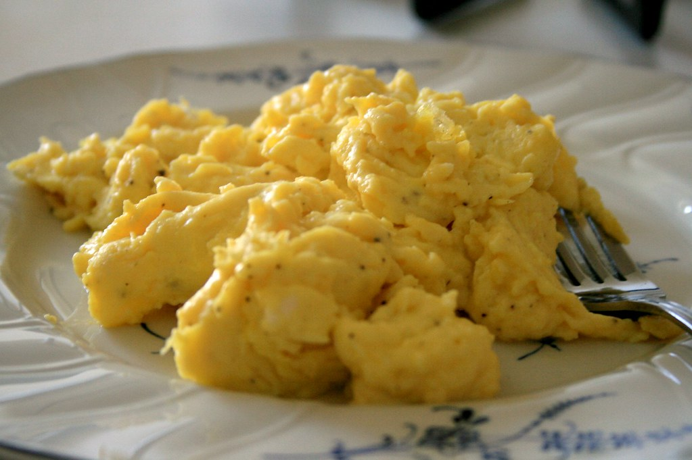

Scrambled Eggs

Description
Scrambled eggs are one of the most fundamental cooking skills everyone should master. This classic breakfast dish might seem simple, but when done properly, scrambled eggs are creamy, fluffy, and incredibly satisfying. The key is low heat and patience - rushing the process will result in tough, rubbery eggs.
Perfect scrambled eggs should be soft, silky, and just set. They're versatile enough to enjoy on their own or as part of a larger breakfast spread. With just a few basic ingredients and the right technique, you can create restaurant-quality scrambled eggs in your own kitchen.
Ingredients
- 6 large eggs
- 2 tablespoons butter
- 2 tablespoons heavy cream or milk
- Salt to taste
- Freshly ground black pepper to taste
- Fresh chives, chopped (optional)
Steps
- Crack the eggs into a bowl and whisk them thoroughly until well combined.
- Add cream or milk, salt, and pepper to the eggs and whisk again until smooth.
- Heat a non-stick pan over low heat and add 1 tablespoon of butter.
- Once the butter has melted and coats the pan, pour in the egg mixture.
- Let the eggs sit for about 30 seconds without stirring to begin setting.
- Using a spatula, gently stir the eggs from the outside toward the center, creating large curds.
- Continue cooking and stirring gently every 30 seconds, allowing the eggs to slowly cook.
- When the eggs are almost set but still slightly wet, add the remaining tablespoon of butter.
- Remove from heat and give one final gentle stir - the residual heat will finish cooking the eggs.
- Garnish with fresh chives if desired and serve immediately while hot.
Home